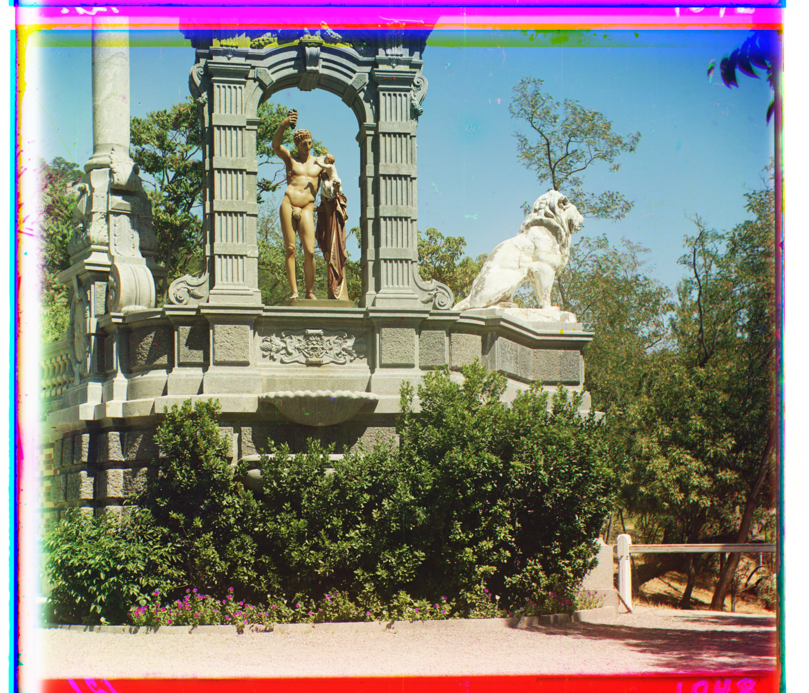

Project 1: Images of the Russian Empire -- Colorizing the Prokudin-Gorskii Photo Collection
Background
In the early 1900s, Sergei Mikhailovich Prokudin-Gorskii traveled the Russian empire and recorded three exposures
of every scene onto a glass plate using a red, a green, and a blue filter. The Library of Congress has bought
and digitized these negatives.
In this project, we apply image processing techniques in order to take these glass plate images and produce a
color image with as few artifacts as possible.
Implementation
Overall, the implementation involved splitting up the image, then aligning the 3 color channels, and then combining
them to produce a color image.
Single-Scale Method
After splitting the image into thirds (R, G, B), the blue image was used as a baseline, and the red and green
were aligned to the blue image.
Aligning G to B, for example, involved shifting G around in a range of 2D shifts (default being [-15, 15]), and
then using a loss function to quantify how well this shift aligned with B.
Ultimately, the shift with the lowest cost was selected. I implemented a few loss functions like l2-norm and NCC
(Normalized Cross-Correlation). Furthermore, to improve the loss functions, I only computed them on the inner
90% of the image
as that is the area whose good-alignment we want to emphasize (since the main information of the images is
generally all in the center).
Iterating over this range of 2D shifts ultimately gave us "best" displacements, that we could then use to create
the RGB image.
Multi-Scale Speedup: Image Pyramids
While the above approach works on small images, it becomes increasingly unsustainable for larger images- for
very large images, operations like shifting them and computing the loss, take longer, and so repeating them
over a range of shifts is prohibitively slow. To address this, I implemented an image-pyramid-based recursive
version of the single-scale method. Essentially, the base case (small image) still reduces to the single-scale
algorithm.
However, if the image is large, we rescale it to half the size, and then recurse. The recursive call gives us
the best displacement for the half-size image.
By doubling this return value and centering our search-window around it, we are able to efficiently use the
coarser images to get an estimate of the alignment and then refine it further and further with each larger-scale
image.
Additionally, to keep this method fast, I make the search window size larger for the smaller images- for small
images, it's less of a penalty to have a large search window, so we can be more aggressive in finding the best
shift, and then lower our window
size once we get to the larger image.
Bells and Whistles
Better Features: Image Gradient
Instead of using just the raw pixel values, this improvement uses the image gradient when aligning two images.
I calculate Sobel derivatives in the X and Y direction, and combine them in a fast way for an estimate of the
gradient.
This allows us to replace the image with a map of its edges (example image below) to be used for alignment.
Because this edge-image
has either really high or really low intensity pixels, it will lead to really high/low loss-values, making it
more likely we find the best
possible alignment. At the highest-level, this feature is implemented as a boolean use_grad that the user can
turn on/off.
|
BGR Image Gradients for Cathedral
|
BGR Image Gradients for Tobolsk
|
Auto Contrasting: Linearly Rescaling Intensities
To improve the perceived image quality, I apply auto-contrasting the final output image. This involves linearly
rescaling the pixel intensities such that the min intensity goes to 0
and the max intensity goes to 1 (across all 3 color channels).
|
Emir Output With
No Image
Gradient and No Auto-Contrast
|
Emir Output With Only Image Gradient
|
|
Emir Output With Only Auto Contrast
|
Emir Output With Both Image Gradient AND Auto Contrast
|
Gallery
The following gallery of color images was produced with both image gradients and auto-contrasting enabled.
Each image also has the red-to-blue and green-to-blue displacement listed.

Cathedral, Red Displacement: [12, 3], Green Displacement: [5, 2]
|

Monastery, Red Displacement: [3, 2], Green Displacement: [-3, 2]
|

Tobolsk, Red Displacement: [6, 3], Green Displacement: [3, 3]
|
|
Church, Red Displacement: [58, -5], Green Displacement: [26, 6]
|
Emir, Red Displacement: [106, 39], Green Displacement: [49, 22]
|
|
Harvester, Red Displacement: [114, 16], Green Displacement: [53, 17]
|
Icon, Red Displacement: [92, 23], Green Displacement: [45, 17]
|
|
Lady, Red Displacement: [113, 11], Green Displacement: [52, 9]
|
Melons, Red Displacement: [177, 14], Green Displacement: [81, 9]
|
|
Onion Church, Red Displacement: [109, 37], Green Displacement: [51, 26]
|

Sculpture, Red Displacement: [140, -27], Green Displacement: [34, -11]
|
|
Self Portrait, Red Displacement: [173, 35], Green Displacement: [74, 26]
|
Three Generations, Red Displacement: [105, 11], Green Displacement: [42, 17]
|
|
Train, Red Displacement: [79, 35], Green Displacement: [32, 7]
|